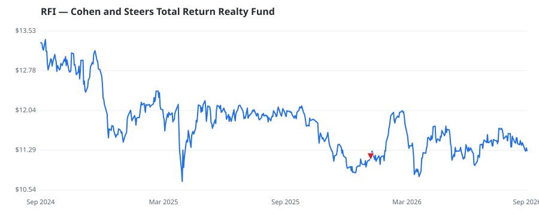

bullish · bearish · n/a — dots: price>SMA10 · SMA10>SMA50 · SMA50>SMA200 · up>down volume (20d)
Other · micro cap

Cohen & Steers Total Return Realty Fund Inc is a diversified closed-end management investment company. Its investment objective is to achieve a high total return through investment in real estate securities. The Fund invests majority of its total assets in the equity securities of real estate companies under normal circumstances, which includes common shares, REITs, rights or warrants, convertible securities, and preferred shares. · website